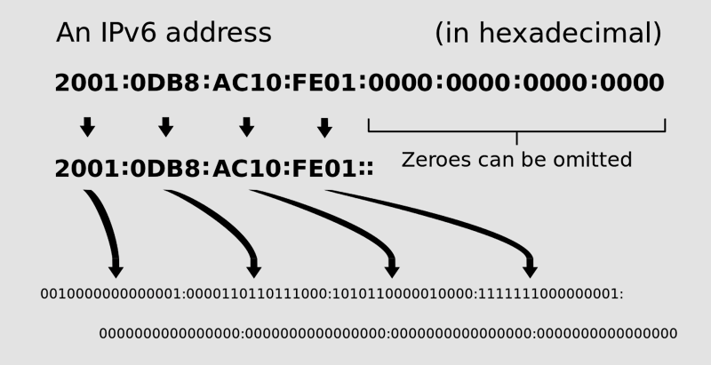

TCP/IP protocols
TCP/IP layers:
Packet formats:
TCP (Transmission Control Protocol) and IP (Internet Protocol) are the foundational protocols of the Internet protocol suite. In the past it was known as DoD model because it was developed by the US Department of Defense project agency.
OSI (Open System Interconnect) is rather theoretical (conceptual) model, some experts call it a reference model used for understanding and designing the system architecture.
OSI model TCP/IP model ============== ================= Application -------------- Presentation Application -------------- Session -------------- ----------------- Transport Transport -------------- ----------------- Network Internet -------------- ----------------- Data Link -------------- Link Layer Physical -------------- ----------------- |
Note!
Experts have some disagreements concerning TCP/IP architecture, relations of TCP/IP layers to OSI layers, naming of layers, etc.
TCP/IP : Application layer
includes protocols like:
- DNS - Domain Name System (udp/53),
- FTP - the File Transfer Protocol (tcp/21),
- HTTP - the Hypertext Transfer Protocol (tcp/80),
- HTTPS - the Hypertext Transfer Protocol Secure (tcp/443),
- IMAP - the Internet Message Access Protocol; there are just IMAP (tcp/143) and IMAPS (IMAP over SSL) (tcp/993),
- LDAP - the Lightweight Directory Access Protocol (tcp/389, udp/389) or LDAPS (LDAP over SSL) (tcp/636),
- NTP - the Network Time Protocol (udp/123),
- POP - the Post Office Protocol; there are POP3 (tcp/110) and secure (TLS/SSL) POP3S (tcp/995),
- SMTP - the Simple Mail Transfer Protocol (tcp/25),
- SSH - Secure Shell (tcp/22),
- TFTP - the Trivial File Transfer Protocol (udp/69),
- etc
Application layer also includes some basic network support services such as protocols for routing (e.g., RIP, the Routing Information Protocol, udp/520) and host configuration (e.g., DHCP, the Dynamic Host Configuration Protocol, udp/67, udp/68).
The TCP/IP model does not consider the specifics of formatting and presenting data, and does not define additional layers between the application and transport layers as in the OSI model. Such functions are supposed to be provided by libraries and APIs. Application layer protocols treat the transport layer (and lower) protocols as black boxes, though apps are usually aware of key qualities of the transport layer connection such as the endpoint IP addresses and port numbers.
The transport and lower layers are unconcerned with the specifics of app layer, routers and switches do not typically examine the encapsulated traffic. However, some firewall and bandwidth throttling apps must interpret app data. It is also sometimes necessary for NAT (Network Address Translator) traversal to consider the application payload.
TCP/IP : Transport layer
The transport layer in TCP/IP model (aka host-to-host layer) roughly corresponds to the 4th layer in the OSI model. It provides host-to-host connectivity and end-to-end message transfer services that are independent of the user data structure or of the underlying network. The main protocols of the transport layer:
- TCP Transmission Control Protocol, reliable, connection-oriented protocol.
- UDP, User Datagram Protocol, less reliable, light-weight, connectionless protocol.
- SCTP, Stream Control Transmission Protocol, reliable, connection-oriented transport mechanism; it's a message-stream-oriented (unlike TCP which is byte-stream-oriented); it provides multiple streams multiplexed over a single connection and multi-homing support (a connection endpoint can be represented by multiple IP addresses representing multiple physical interfaces, if one iface fails, the connection is not interrupted).
The transport layer establishes the concept of the network port - a numbered logical construct allocated specifically for each of the communication channels an application needs.
TCP/IP : Internet layer
is responsible for sending packets across potentially multiple networks. The process of sending data from the source network to the destination network is called routing. The Internet Protocol performs two basic functions:
- Host addressing and identification - provided by a hierarchical IP addressing system.
- Packet routing - the basic task of sending packets of data (datagrams) from source to destination by forwarding them to the next network router closer to the final destination.
The main protocols of Internet layer are:
- IP, the Internet Protocol - the fundamental protocol in the Internet protocol suite responsible for relaying datagrams across network boundaries. Its routing function enables internetworking, and essentially establishes the Internet.
- ICMP, the Internet Control Message Protocol is a supporting
protocol. It's used by network devices, including routers, to send error
messages and operational info indicating, for example, that a requested
service is not available or that a host or router could not be reached.
Unlike transport layer protocols ICMP is not typically used for data exchange,
nor is it regularly employed by end-user network apps except some diagnostic
tools like
pingandtraceroute. - IGMP, the Internet Group Management Protocol is a communications protocol used by hosts and adjacent routers on IPv4 networks to establish multicast group memberships. IGMP is an integral part of IP multicast. It can be used for one-to-many networking apps such as online streaming video and gaming, and allows more efficient use of resources when supporting these types of apps. Note that IGMP is used on IPv4 networks only. Multicast management on IPv6 networks is handled by Multicast Listener Discovery (MLD) which is a part of ICMPv6 in contrast to IGMP's bare IP encapsulation.
TCP/IP : Link layer
The link layer in the TCP/IP model corresponds to the physical (layer 1) and data link (layer 2) layers of the OSI model.
The link layer is a realm of networking protocols that operate only on the local network segment (link) that a host is connected to. The packets of these protocols are not routed to other networks. The link layer includes the protocols that define communication between local network nodes which fulfill the purpose of maintaining link states between the local nodes, such as the local network topology, and that usually use protocols that are based on the framing of packets specific to the link types (e.g., Ethernet).
The processes of transmitting and receiving packets on a given link can be controlled by the software device driver for the network card, as well as by the firmware or specialized chipsets.
The TCP/IP model includes specs of translating the network addressing methods used in the Internet Protocol to link layer addresses, such as Media Access Control (MAC) addresses. All other aspects below that level, however, are implicitly assumed to exist in the link layer, but are not explicitly defined.
The core protocols in this layer:
- ARP, the Address Resolution Protocol is used for discovering the link layer address, such as a MAC address, associated with a given internet layer address, typically an IPv4 address. This mapping is a critical function in the Internet protocol suite. ARP was defined in 1982 by RFC 826, which is Internet Standard STD 37.
- RARP, the Reverse Address Resolution Protocol is an obsolete protocol used by a client computer to request its IPv4 address from a computer network, when all it has available is its link layer or hardware address (MAC). The client broadcasts the request and does not need prior knowledge of the network topology or the identities of servers capable of fulfilling its request. It has been rendered obsolete by the Bootstrap Protocol (BOOTP) and the modern DHCP, which both support a much greater feature set than RARP.
- NDP, the Neighbor Discovery Protocol is an IPv6 replacement for ARP. It operates at the Link Layer and is responsible for gathering various info required for internet communication, including the configuration of local connections and the domain name servers and gateways used to communicate with more distant systems. The protocol defines five different ICMPv6 packet types to perform functions similar to IPv4 ARP, ICMP, Router Discovery and Router Redirect protocols. The Inverse Neighbor Discovery (IND) protocol extension allows nodes to determine and advertise an IPv6 addr corresponding to a given link-layer addr (like IPv4 RARP). The Secure Neighbor Discovery Protocol (SEND), a security extension of NDP, uses Cryptographically Generated Addresses (CGA) and the Resource Public Key Infrastructure (RPKI) to provide an alternative mechanism for securing NDP with a cryptographic method that is independent of IPsec. Neighbor Discovery Proxy (ND Proxy) provides a service similar to IPv4 Proxy ARP and allows bridging multiple network segments within a single subnet prefix when bridging cannot be done at the link layer.
- ...
LAN standards like Ethernet and IEEE 802 specs use terminology from the OSI model rather than the TCP/IP model, because the TCP/IP model in general does not consider physical specs, it just assumes that network infrastructure exists and works and can deliver media level frames on the link. Therefore, RFC 1122 and RFC 1123 (the definition of the TCP/IP model) do not consider hardware issues and physical data transmission and set no standards for those aspects.
Datagram, packet, segment, frame, octet
By definition, a datagram is a self-contained, independent entity of data carrying sufficient information to be routed from source to destination without reliance on earlier exchanges between source, destination, and the transporting network (RFC 1594).
The idea of datagram is widely used in communiction, and TCP/IP is just a case where the term "datagram" is used for the packets of unreliable services, which cannot notify the sender if delivery fails, while the term "packet" applies to any packet, reliable or not.
The internet layer of TCP/IP (Layer 3 of OSI) is a datagram service provided by an IP protocol. That is, all IP packets are datagrams, because IP is a connectionless, best effort, unreliable, message delivery service.
| OSI layer | Name |
|---|---|
| Layer 4 | Data segment |
| Layer 3 | Data packet |
| Layer 2 | Frame (Ethernet, Wi-Fi); Cell (ATM) |
| Layer 1 | Chip (CDMA) |
Note these subtle terminological nuances: a TCP/UDP packet can be called a segment, but an IP packet is always a packet. On the other hand, IP and UDP packets are datagrams, while TCP packet should not be called "datagram" (notice "without reliance on earlier exchanges" in the above definition).
Frame is a unit of transmission in the link layer protocol. Frames are the result of the final layer of encapsulation before the data is transmitted over the physical layer.
Each frame is a series of bits composed of header, payload, frame check sequence (FCS), and interframe gap which semantically is not the part of the frame, but sometimes is counted in. See Ethernet frame for details.
In computing and telecommunications, the octet is a unit of digital information that consists of eight bits. The term is used when the term byte might be ambiguous. Usually, there is no difference between octet and byte, but historically byte was not always 8-bit.
Ethernet frame
There are at least three different types of Ethernet frames.
Current Ethernet standard (since 1982), known as Ethernet II or Ethernet Version 2 or DIX 2.0 (DEC, Intel, Xerox) has 1518-octet frame length:
header (14 octets) + payload (1500 octets) + FCS (4 octets)
This count does not include a preamble (8 octets, synchronization sequence) and an interframe gap (at least 12 octets). Anyway, MTU is 1500 bytes.
| DA | SA | Type | Payload | FCS |
DA Destination MAC addr (6 bytes) SA Source MAC addr (6 bytes) Type Protocol type (2 bytes) Data Protocol data (46 - 1500 bytes) FCS Frame check sequence (4 bytes)
| 0x0800 | Internet Protocol, Version 4 (IPv4) |
| 0x0806 | Address Resolution Protocol (ARP) |
| 0x8035 | Reverse Address Resolution Protocol (RARP) |
| 0x8100 | VLAN-tagged frame (IEEE 802.1Q) |
| 0x814C | Simple Network Management Protocol (SNMP) |
| 0x86DD | Internet Protocol, Version 6 (IPv6) |
| 0x8847 | MPLS unicast |
| 0x8848 | MPLS multicast |
| 0x8870 | Jumbo Frames |
| 0x888E | EAP over LAN (IEEE 802.1X) |
| 0x88E5 | MAC security (IEEE 802.1AE) |
| 0x88F7 | Precision Time Protocol (IEEE 1588) |
Frame Check Sequence uses a 32-bit CRC for error detection.
In 1983, the IEEE introduced the 802.3 Ethernet standard to standardize the protocol across all networking equipment, regardless of the manufacturer. It is also known as "IEEE 802.3 Ethernet with IEEE 802.2 LLC" (Logical Link Control). It's less popular, and its format is more complicated. For example, it has 2-octet "length" field instead of "protocol type" (EtherType), and network cards use this field to find the type of Ethernet frame: if the value in this field is less then 0x05DC (this hex number is equal to decimal 1500 which is Ethernet's MTU), then this is an IEEE 802.3 frame, and the value is payload's length. Otherwise, it's Ethernet Version 2, and the field is protocol type (EtherType).
Many Gigabit Ethernet switches and Gigabit Ethernet NICs (network interface card) support larger jumbo frames with payload up to 9000 octets.
MTU, MSS
Frame > MTU > MSS
Maximum Transmission Unit (MTU) is the size of the largest protocol data unit (PDU) that can be communicated in a single transaction on the network layer (Internet Layer, OSI Layer 3).
In case of TCP/IP, the PDU is IP datagram, and MTU is the max possible size of that datagram. Since the link layer adds some overhead,
MTU = maximum_frame_size - overhead
Frame size depends on the communication media. For example, typical Ethernet frame allows 1500 octets of payload, and it means that MTU is 1500 bytes.
Maximum Segment Size (MSS) is the largest amount of data (in bytes), that a network device (computer, router, etc) can handle as a single piece, i.e., without fragmentation. For optimum communications,
segment_size + header_size <= MTU
The Ethernet's default MTU is 1500 bytes, IPv4 header is at least 20 bytes, max 60 bytes, so, the MSS can be 1440..1480 bytes. Usually each side of connection derives MSS from MTU and informs the other side. MSS does not have to be the same in both directions. If, due to some reasons (e.g., low memory) one side wants to receive packets with smaller MSS, it's not a problem.
Path MTU Discovery
When the packets are routed over the Internet, they may pass through a number of routers and networks of different architecture. Ideally, each data segment should traverse the networks without fragmentation.
Path MTU Discovery (PMTUD) is a standard technique for determining the optimal MTU size on the network path between two Internet hosts. In IPv4 it was originally intended for routers, but all modern operating systems use it on endpoints. In IPv6, this function has been explicitly delegated to the endpoints.
For IPv4 packets, PMTUD works when sender (source) sets the DF ("Don't Fragment") flag in the IP headers of the outgoing packets. Any device along the path whose MTU is smaller than MTU of the packet, drops that packet, and sends back an ICMP message Fragmentation Needed (Type 3, Code 4) containing its MTU. The process can be repeated several times at several points until the source sets MTU to a sufficiently small size allowing to transfer the packets without fragmentation.
IPv6 routers do not support fragmentation at all, and PMTUD works by initially assuming the path MTU is the same as the MTU on the link layer interface where the traffic originates. Then, similar to IPv4, any device along the path whose MTU is smaller than that of the packet, just drops the packet and sends back an ICMPv6 message Packet Too Big (Type 2) containing its MTU, ... until the MTU is small enough to traverse the entire path without fragmentation.
The packets can follow different paths, and diff paths may require diff MTUs. If the Path MTU changes after connection was set up, and this changed MTU is lower than the previously determined Path MTU (probably because the last path was not the best), then OS will periodically send probes to see if the path has changed (became better) and now allows larger packets. Linux and Windows by default set this timer to 10 minutes.
Note that PMTUD uses ICMP protocol, and excessive filtering/blocking can cause problems. For example, TCP handshake goes without problems, but data transfer fails because some router drops large packets and sends ICMP messages to the sender, but sender does not receive these messages.
Socket
A network socket is an internal endpoint created within a node (network host), for sending and receiving data on a computer network. The term socket comes from the hardware terminology where a female socket, which is usually the part of equipment, is used to insert a male connector of a communication cable.
The networking software uses the idea of a socket in the Socket API to hide the complexities of the network protocol stack.
The term socket is also used in IPC (inter-process communication), not directly related to networks.
Internet socket
In TCP/IP context, socket usually means an Internet socket. Technically, it's a programmatic structure hidden somewhere within network software and accessible for software developers through the Socket API.
Sockets are used by TCP and UDP protocols, and each socket is associated with a specific socket address (IP address + Port number) for the local node. Associating a socket with a socket address is called binding.
If you are a software developer, you have to deal with:
- socket (internal representation),
- socket descriptor (abstract identifier),
- socket address (see above)
And though there is no strict definition of Internet socket, experts agree that it must be characterized by at least two params:
- local socket address
- protocol
The protocol in this case means transport protocol which is usually TCP or UDP, but can also be raw IP. Remember that IP protocol does not have ports! As for TCP and UDP,
Local socket address = Local IP address + Port number
The port number is just an integer number (1..65535) used by software to discern one communication channel from another (similar to TV channels). Thus, the endpoint with TCP port 53, and the endpoint with UDP port 53, are totally different.
Also, a socket connected to another socket [usually, but not always, created on the other network host], has both local socket address and remote socket address.
Socket types
There are following Internet socket types:
- Stream sockets (connection-oriented sockets), which use TCP, SCTP (Stream Control Transmission Protocol) or DCCP (Datagram Congestion Control Protocol).
- Datagram sockets (connectionless sockets), using UDP.
- Raw sockets (Raw IP sockets), typically available in
routers and other network equipment; these sockets don't use the transport
layer, the packet headers are made accessible to app, and there is no port
number, just an IP address; raw sockets are used by ICMP, IGMPv4, OSPF,
and by misc network utilities like
pingandnmap.
IP protocol (IPv4 / IPv6 / IP proto nums)
IP has the task of delivering packets from the source host to the destination host solely based on the IP addresses in the packet headers. For this purpose, IP defines packet structures that encapsulate the data to be delivered. It also defines addressing methods that are used to label the datagram with source and destination info.
The first major version, Internet Protocol Version 4 (IPv4) is still the dominant protocol of the Internet. Its successor, Internet Protocol Version 6 (IPv6), is growing (~20% of the Internet traffic as of 2018).
The Internet Protocol is responsible for addressing hosts, encapsulating data into datagrams (including fragmentation and reassembly) and routing datagrams from a source host to a destination host across one or more IP networks. For these purposes, the Internet Protocol defines the format of packets and provides an addressing system.
Each datagram has (1) header and (2) payload. The IP header includes src IP, dest IP, and other metadata needed to route and deliver the datagram. The payload is the data that is transported.
IP addressing entails the assignment of IP addresses and associated params to host interfaces. The address space is divided into subnetworks, involving the designation of network prefixes. IP routing is performed by all hosts, as well as routers, whose main function is to transport packets across network boundaries. Routers communicate with one another via specially designed routing protocols, either interior gateway protocols or exterior gateway protocols, as needed for the topology of the network.
IP address
An IP address (Internet Protocol address) is a numerical label assigned to each device connected to a computer network that uses the Internet Protocol for communication.
The canonical representation of IPv4 addr (dotted-decimal notation) consists of four decimal numbers, each ranging from 0 to 255, separated by dots. Each part is an octet (a group of 8 bits). However, you can also consider an IP address as consisting of two groups of bits:
- network prefix - the most significant bits which identify a whole network or subnet,
- host identifier - the least significant bits which specify a particular host (or, to be exact, a particular network interface) on that network
The actual division (how many bits comprise network prefix, and how many are used for host identification) is defined by the network mask which may be set explicitly like 255.255.0.0 or implicitly like /16 in CIDR notation.
IP address
172 . 16 . 254 . 1
10101100.00010000.11111110.00000001
Network mask
255 . 255 . 0 . 0
11111111.11111111.00000000.00000000
This division is used as the basis of traffic routing between IP networks and for address allocation policies.
Technically, IP addresses are binary numbers, but users usually deal with a textual representation of IPv4
172.16.254.1
or IPv6:
2001:db8:0:1234:0:567:8:1
Internet Protocol Version 4 (IPv4) address length is 32 bits, which limits the address space to ~4 billions (4,294,967,296 or 232) unique addresses. Besides, some quantity of these addresses are reserved for special purposes, e.g., private networks (~18 millions), multicast addresses (~270 millions).

Internet Protocol Version 6 (IPv6) address length is 128 bits, or 16 octets. It provides 2128, or about 3.403×1038 unique addresses which is supposed to be sufficient for the foreseeable future.
IPv6 was officially released in 1995 because the rapid exhaustion of IPv4 address space prompted IETF (Internet Engineering Task Force) to redesign the Internet Protocol itself.
Besides providing an awful quantity of addresses, IPv6 also allows efficient aggregation of subnet routing prefixes at routing nodes. As a result, routing tables are smaller, and the smallest possible individual allocation is a subnet for 264 hosts. The new design also provides the opportunity to separate the addressing infrastructure of a network segment from the addressing prefix used to route external traffic for a network. IPv6 has facilities that auto change the routing prefix of entire networks, should the global connectivity or the routing policy change, without requiring internal redesign or renumbering.
The large number of IPv6 addresses allows large blocks to be assigned for specific purposes and, where appropriate, to be aggregated for efficient routing. With a large address space, there is no need to have complex address conservation methods like those used in CIDR.
Classful addressing (IPv4)
The old classful network addressing architecture was used in the Internet since 1981 until the introduction of CIDR in 1993. It divides the IP address space for IPv4 into five address classes based on the leading four address bits. Classes A, B, and C provide unicast addresses for networks of three different network sizes. Class D is for multicast networking and the class E address range was reserved for future/experimental purposes.
| Cls | Net part, bits | Number of networks | Addresses per network | Addr range | Default subnet mask in dot-dec notation | CIDR |
|---|---|---|---|---|---|---|
| A | 8 | 128 | 16,777,216 (224) | 0.0.0.0 - 127.0.0.0 | 255.0.0.0 | /8 |
| B | 16 | 16,384 | 65,536 (216) | 128.0.0.0 - 191.255.0.0 | 255.255.0.0 | /16 |
| C | 24 | 2,097,152 | 256 (28) | 192.0.0.0 - 223.255.255.0 | 255.255.255.0 | /24 |
| D | n/a | n/a | n/a | 224.0.0.0 - 239.255.255.255 | n/a | n/a |
| E | n/a | n/a | n/a | 240.0.0.0 - 255.255.255.255 | n/a | n/a |
CIDR (IPv4)
Note that CIDR is IPv4 only, there is no CIDR in IPv6!
Classless Inter-Domain Routing /ˈsaɪdər, ˈsɪ-/ is a slightly different [compared to classful addressing] method for allocating IP addresses and IP routing. It was introduced to replace the classful network design in the Internet with the goal to slow the growth of routing tables on routers and the fast exhaustion of IPv4 addresses.
CIDR is based on the variable-length subnet masking technique, which allows the specification of arbitrary-length prefixes. CIDR notation represents an IP address as a routing prefix (address) with a suffix indicating the number of bits of the prefix, such as 192.0.2.0/24 (IPv4), or 2001:db8::/32 (IPv6).
CIDR also introduced an administrative process of allocating address blocks to organizations based on their actual and short-term projected needs. The aggregation of multiple contiguous prefixes resulted in supernets in the larger Internet, which whenever possible are advertised as aggregates, thus reducing the number of entries in the global routing table.
| CIDR | Netmask | Hosts in subnet |
|---|---|---|
| /31 | 255.255.255.254 | 2 (point-to-point link; rare) |
| /30 | 255.255.255.252 | 2 (point-to-point link) |
| /29 | 255.255.255.248 | 6 |
| /28 | 255.255.255.240 | 14 |
| /27 | 255.255.255.224 | 30 |
| /26 | 255.255.255.192 | 62 |
| /25 | 255.255.255.128 | 126 |
| /24 | 255.255.255.0 | 254 (Class C) |
| /23 | 255.255.254.0 | 510 |
| /22 | 255.255.252.0 | 1022 |
| /21 | 255.255.248.0 | 2046 |
| /20 | 255.255.240.0 | 4094 |
| /19 | 255.255.224.0 | 8190 |
| /18 | 255.255.192.0 | 16382 |
| /17 | 255.255.128.0 | 32766 |
| /16 | 255.255.0.0 | 65534 (Class B) |
| /15 | 255.254.0.0 | 131070 |
| /14 | 255.252.0.0 | 262142 |
| /13 | 255.248.0.0 | 524286 |
| /12 | 255.240.0.0 | 1048574 |
| /11 | 255.224.0.0 | 2097150 |
| /10 | 255.192.0.0 | 4194302 |
| /9 | 255.128.0.0 | 8388606 |
| /8 | 255.0.0.0 | 16777214 (Class A) |
Example:
192.168.1.0/24
Network address is 192.168.1.0. CIDR prefix length 24 bits means that netmask is 255.255.255.0. The max num of hosts allowed in this network is 254, because 192.168.1.0 is the network address, and 192.168.1.255 is the broadcast address.
| CIDR addr block | Description | Reference |
|---|---|---|
| 0.0.0.0/8 | Current net (source addr only) | RFC 1700 |
| 10.0.0.0/8 | Private network (Class A) | RFC 1918 |
| 127.0.0.0/8 | Loopback | RFC 5735 |
| 169.254.0.0/16 | Link-Local | RFC 3927 |
| 172.16.0.0/12 | Private network (Class B) | RFC 1918 |
| 192.0.0.0/24 | Reserved (IANA) | RFC 5735 |
| 192.0.2.0/24 | TEST-NET-1, Doc and examples | RFC 5735 |
| 192.88.99.0/24 | IPv6 to IPv4 relay | RFC 3068 |
| 192.168.0.0/16 | Private network (Class C) | RFC 1918 |
| 198.18.0.0/15 | Network benchmark tests | RFC 2544 |
| 198.51.100.0/24 | TEST-NET-2, Doc and examples | RFC 5737 |
| 203.0.113.0/24 | TEST-NET-3, Doc and examples | RFC 5737 |
| 224.0.0.0/4 | Multicasts (former Class D) | RFC 3171 |
| 240.0.0.0/4 | Reserved (former Class E) | RFC 1700 |
| 255.255.255.255 | Broadcast | RFC 919 |
IP multicast
A multicast address is a logical identifier for a group of hosts in a computer network that are available to process datagrams or frames intended to be multicast for a designated network service. Multicast addressing can be used:
- in the link layer (OSI model, layer 2), such as Ethernet multicast,
- at the internet layer (OSI model, layer 3) for IP multicast.
IP multicast (i.e., IP-specific form of multicast) is a technique for one-to-many and many-to-many real-time communication over an IP infrastructure using [in most cases] UDP protocol because it does not require to establish connection with the receiving side. This is a method of sending datagrams to a group of interested receivers in a single transmission.
IP multicast uses specially reserved multicast address blocks 224.0.0.0/4 for IPv4 and ff00::/8 for IPv6. The subrange 224.0.0.0/24 (ffx2::/16) is used for multicasting on the local subnetworks only, routers do not (or at least, must not) forward pkts with addresses belonging to this range.
An IP multicast group address is used by sources and the receivers to send and receive multicast messages. Sources use the group address as the IP destination address in their data packets. Receivers use this group address to inform the network that they are interested in receiving packets sent to that group. For example, if some content is associated with the group 224.0.0.251, the source will send data packets destined to 224.0.0.251. Receivers for that content inform the network that they are interested in receiving data packets sent to the group 224.0.0.251. In other words, receivers join 224.0.0.251.
The protocol typically used by receivers to join a group is called IGMP, the Internet Group Management Protocol (IPv4). Multicast management on IPv6 networks is handled by MLD (Multicast Listener Discovery) which is a part of ICMPv6 in contrast to IGMP's bare IP encapsulation.
Some notable multicast addresses:
| IPv4 | IPv6 | |
|---|---|---|
| 224.0.0.1 | ff02::3 | All Hosts multicast group addresses all hosts on the same network segment |
| 224.0.0.2 | ff02::2 | All Routers multicast group addresses all routers on the same network segment |
| 224.0.0.22 | n/a | IGMP (Internet Group Management Protocol version 3); IPv4 only |
| n/a | ff02::16 | MLDv2, Multicast Listener Discovery, a component of the IPv6 suite, is used by IPv6 routers for discovering multicast listeners on a directly attached link |
| 224.0.0.251 | ff0x::fb | Multicast DNS (mDNS) address |
| 224.0.0.252 | ff02::1:3 | Link-local Multicast Name Resolution (LLMNR) address |
IPv4 packet
| 0 | 1 | 2 | 3 | 4 | 5 | 6 | 7 | 0 | 1 | 2 | 3 | 4 | 5 | 6 | 7 | 0 | 1 | 2 | 3 | 4 | 5 | 6 | 7 | 0 | 1 | 2 | 3 | 4 | 5 | 6 | 7 |
|---|---|---|---|---|---|---|---|---|---|---|---|---|---|---|---|---|---|---|---|---|---|---|---|---|---|---|---|---|---|---|---|
| Version | IHL | Type of Service | Total Length | ||||||||||||||||||||||||||||
| Identification | Flags | Fragment Offset | |||||||||||||||||||||||||||||
| Time to Live | Protocol | Header Checksum | |||||||||||||||||||||||||||||
| Source Address | |||||||||||||||||||||||||||||||
| Destination Address | |||||||||||||||||||||||||||||||
| Options (variable length, 0..40 bytes) | |||||||||||||||||||||||||||||||
| Data (variable length) | |||||||||||||||||||||||||||||||
Version (4 bits)
The version of IP used to generate the datagram. For IPv4, this is 4. The purpose is to ensure compatibility between devices that may be running diff IP versions. In general, a device running an older version will reject datagrams created by newer implementations, as it may not be able to interpret them correctly.
IHL (4 bits)
Internet Header Length in 32-bit words, including the length of any options fields and padding. The normal length without options is 20 bytes.
TOS (8 bits)
Type of Service. It was supposed to provide the quality of service features, such as prioritized delivery for IP datagrams. Later its meaning has been redefined for use by a technique called Differentiated Services (DS).
TL (16 bits)
Total Length of the IP datagram, in bytes. The max length of an IP datagram is 65,535 bytes, though most are much smaller.
Identification (16 bits)
This field contains a 16-bit value that is common to each of the fragments belonging to a particular message; for datagrams originally sent unfragmented it is still filled in, so it can be used if the datagram must be fragmented by a router during delivery. This field is used by the recipient to reassemble messages (IP datagrams can be received out of order).
Flags (3 bits)
| Bit 1 | Reserved. |
| Bit 2 | DF (Don't Fragment). 1 means that the datagram should not be fragmented. Since fragmentation process is usually invisible to higher layers, the majority of protocols don't care and don't set this flag. However, it is used to test link's MTU (maximum transmission unit). |
| Bit 3 | MF (More Fragments). 0 indicates the last fragment in a message; 1 indicates that more fragments are to come. Unfragmented message has MF = 0. |
Fragment Offset (13 bits)
If a msg is fragmented, this field specifies position in the overall msg where the data in this fragment goes. It is specified in units of 8 bytes (64 bits). The first fragment has an offset of 0.
TTL (8 bits)
Time To Live. Specifies how long the datagram is allowed to "live" on the network, in terms of router hops. Each router decrements the value of the TTL field by one prior to re-transmitting it. If the TTL field drops to zero, the datagram is assumed to have taken too long a route and is discarded.
Protocol (8 bits)
Identifies the higher-layer protocol (either a transport layer prot or encapsulated network layer prot) carried in the datagram. Here is a small fragment of the IP protocol numbers list.
| Hex | Dec | Protocol |
|---|---|---|
| 00 | 0 | Reserved |
| 01 | 1 | ICMP |
| 02 | 2 | IGMP |
| 03 | 3 | GGP |
| 04 | 4 | IP-in-IP Encapsulation |
| 06 | 6 | TCP |
| 08 | 8 | EGP |
| 11 | 17 | UDP |
| 32 | 50 | Encapsulating Security Payload (ESP) Extension Header |
| 33 | 51 | Authentication Header (AH) Extension Header |
Header Checksum (16 bits)
A 16-bit checksum computed over the header to provide basic protection against corruption in transmission. It is calculated by dividing the header bytes into two-byte words and then adding them together. The data is not checksummed, only the header.
Source Address (32 bits)
The 32-bit IP address of the originator of the datagram. Though intermediate devices such as routers may handle the datagram, they do not normally put their address into this field, it is always the device that originally sent the datagram.
Destination Address (32 bits)
The 32-bit IP address of the intended recipient of the datagram.
Options (variable length)
One or more of several types of options may be included after the standard headers in certain IP datagrams. If the number of bits is not a multiple of 32, zero bits are added to the header to a multiple of 32 bits (4 bytes).
Data (variable length)
Either an entire higher-layer message or a fragment of one.
IPv6 packet
The control information in IPv6 packets is subdivided into a mandatory fixed header and optional extension headers. The payload of an IPv6 packet is typically a datagram or segment of the Transport Layer protocol, but may be data for an Internet Layer (e.g., ICMPv6) or Link Layer (e.g., OSPF).
Routers do not fragment IPv6 packets, as they do for IPv4. Hosts are "strongly recommended" to implement Path MTU Discovery to take advantage of MTUs greater than the smallest MTU of 1280 octets. A node may use the IPv6 Fragment header to fragment the packet at the source and have it reassembled at the destination(s).
| 0 | 1 | 2 | 3 | 4 | 5 | 6 | 7 | 0 | 1 | 2 | 3 | 4 | 5 | 6 | 7 | 0 | 1 | 2 | 3 | 4 | 5 | 6 | 7 | 0 | 1 | 2 | 3 | 4 | 5 | 6 | 7 |
|---|---|---|---|---|---|---|---|---|---|---|---|---|---|---|---|---|---|---|---|---|---|---|---|---|---|---|---|---|---|---|---|
| Version | Traffic Class | Flow Label | |||||||||||||||||||||||||||||
| Payload Length | Next Header | Hop Limit | |||||||||||||||||||||||||||||
| S o u r c e A d d r e s s (p a r t # 1) | |||||||||||||||||||||||||||||||
| S o u r c e A d d r e s s (p a r t # 2) | |||||||||||||||||||||||||||||||
| S o u r c e A d d r e s s (p a r t # 3) | |||||||||||||||||||||||||||||||
| S o u r c e A d d r e s s (p a r t # 4) | |||||||||||||||||||||||||||||||
| D e s t i n a t i o n A d d r e s s (p a r t # 1) | |||||||||||||||||||||||||||||||
| D e s t i n a t i o n A d d r e s s (p a r t # 2) | |||||||||||||||||||||||||||||||
| D e s t i n a t i o n A d d r e s s (p a r t # 3) | |||||||||||||||||||||||||||||||
| D e s t i n a t i o n A d d r e s s (p a r t # 4) | |||||||||||||||||||||||||||||||
Version (4 bits)
The constant value 6 represented by bit sequence 0110.
Traffic Class (6+2 bits)
The bits of this field hold two values. The 6 most-significant bits hold the Differentiated Services (DS) field, which is used to classify packets. Currently, all standard DS fields end with a 0 bit. Any DS field that ends with two 1 bits is intended for local or experimental use.
The remaining two bits are used for Explicit Congestion Notification (ECN); priority values subdivide into ranges: traffic where the source provides congestion control and non-congestion control traffic.
Flow Label (20 bits)
Originally it was created for real-time apps: when set to a non-zero value, it's a hint to routers and switches with multiple outbound paths that these packets should stay on the same path to avoid reordering. Later it was suggested that this label can be used to detect spoofed packets.
Payload Length (16 bits)
The size of the payload in octets, including any extension headers. The length is set to zero when a Hop-by-Hop extension header carries a Jumbo Payload option.
Next Header (8 bits)
The type of the next header. Usually it specifies the transport layer protocol used by a packet's payload. When extension headers are present in the packet this field indicates which extension header follows. The values are shared with those used for the IPv4 "Protocol" field, as both fields have the same function (see IP protocol numbers).
Hop Limit (8 bits)
Replaces the TTL field of IPv4. This value is decremented by one at each forwarding node, and when it becomes 0 the packet is discarded. However, the dest node must process the packet normally even if hop limit becomes 0.
Source Address (128 bits)
The IPv6 address of the sending node.
Destination Address (128 bits)
The IPv6 address of the destination node(s).
In order to increase performance, and since current link layer technology and transport or application layer protocols are assumed to provide sufficient error detection, the IPv6 header has no checksum!
IPv6 Extension Headers
follow the fixed header and carry optional Internet Layer info. These headers form a chain, using the "Next Header" fields. The Next Header field in the fixed header indicates the type of the first extension header. The Next Header field of the last ext header indicates the type of the upper-layer protocol header which immediately follows the last ext header and is the part of the packet's payload.
Extension headers are supposed to be examined and processed at the packet's destination only, except for "Hop-by-Hop Options", which are processed at every node on the path including sender and receiver.
All extension headers are optional and should only appear once, except for the "Destination Options" header, which may appear twice. The size of any ext header is a multiple of 8 (sometimes internal padding is required).
The following table shows the extension headers currently defined. New extension headers may be defined in the future.
| Extension Header | Type | Description |
|---|---|---|
| Hop-by-Hop Options | 0 | Options that need to be examined by all devices on the path. |
| Destination Options (before routing header) | 60 | Options that need to be examined only by the destination of the packet. |
| Routing | 43 | Methods to specify the route for a datagram (used with Mobile IPv6). |
| Fragment | 44 | Contains parameters for fragmentation of datagrams. |
| Authentication Header (AH) | 51 | Contains info used to verify the authenticity of most parts of the packet. |
| Encapsulating Security Payload (ESP) | 50 | Carries encrypted data for secure communication. |
| Destination Options (before upper-layer header) | 60 | Options that need to be examined only by the destination of the packet. |
| Mobility (currently without upper-layer header) | 135 | Parameters used with Mobile IPv6. |
| Host Identity Protocol | 139 | Used for Host Identity Protocol version 2 (HIPv2). |
| Shim6 Protocol | 140 | Used for Shim6. |
| Reserved | 253 | Used for experimentation and testing. |
| Reserved | 254 | Used for experimentation and testing. |
MIP (Mobile IP) is an IETF standard communications protocol which is designed to allow mobile device users to move from one network to another while maintaining a permanent IP address.
AH (Authentication Header) and ESP (Encapsulating Security Payload) are the parts of IPsec and are used identically in IPv6 and in IPv4.
HIPv2 is the Host Identity Protocol providing secure methods for IP multihoming and mobile computing.
Shim6 is Site Multihoming by IPv6 Intermediation protocol.
TCP protocol (see packet format)
Transmission Control Protocol is one of the main protocols of the Internet protocol suite. It provides host-to-host connectivity at the transport layer of the Internet model. An application does not have to care about the particular details for sending data via a link to another host, TCP handles all handshaking, transmission control, and presents an abstraction of the network connection to the app typically through a network socket interface.
Due to network congestion, traffic load balancing, or unpredictable network behaviour, IP packets may be lost, duplicated, or delivered out of order. TCP detects and solves these problems providing a reliable delivery service which guarantees that all bytes received will be identical to bytes sent and in the correct order.
However, retransmissions and the necessity to reorder arriving packets (sometimes) can introduce latency on the order of seconds. Therefore, TCP is not good for real-time apps like VoIP (Voice over IP) or streaming video.
In other words, TCP is optimized for accurate delivery rather than timely delivery.
Connecting
TCP initializes and maintains certain status info for each data stream. The combination of this information, including sockets, sequence numbers, and window sizes, is called a connection. Each connection is uniquely specified by a pair of sockets identifying its two sides.
To establish a connection, TCP uses a three-way (or 3-step) handshake. First of all, the server must bind to a specific (i.e., defined by server's config) port known to clients, and start listening at this port (passive open). Only after that a client can initiate an active open:
- SYN: The active open is performed by the client sending a SYN [packet] to the server. The client sets the segment's sequence number to a random value M.
- SYN-ACK: In response, the server replies with a SYN-ACK [packet]. The acknowledgment number is set to one more than the received sequence number (M+1), and the sequence number that the server chooses for the packet is another random number, N.
- ACK: Finally, the client sends an ACK back to the server. The sequence number is set to the received acknowledgment value (M+1), and the acknowledgment number is set to one more than the received sequence number (N+1).
At this point, both the client and server have received an acknowledgment of the connection. The steps 1, 2 establish the connection parameter (sequence number) for one direction and it is acknowledged. The steps 2, 3 establish the connection parameter (sequence number) for the other direction and it is acknowledged. Thus, a full-duplex communication is established.
Disconnecting
The connection termination requires a four-way handshake, with each side of the connection terminating independently. When an endpoint decides to stop its half of the connection, it transmits a FIN packet. The other side acknowledges it with an ACK. Therefore, a typical tear-down requires a pair of FIN and ACK segments from each TCP endpoint. After the side that sent the first FIN has responded with the final ACK, it waits for a timeout before finally closing the connection, and at this time the local port is already unavailable for new connections - this prevents confusion due to delayed packets being delivered during subsequent connections.

A connection can be half-open if one side has terminated its end, but the other has not. The side that has terminated can no longer send any data into the connection, but the other side can. So, the terminating side should continue reading the data until the other side terminates as well.
It's possible to terminate connection by a 3-way handshake, when host A sends a FIN and host B replies with a FIN & ACK (i.e., combines 2 steps into 1) and host A replies with an ACK.
Some TCP stacks (e.g., Linux) may implement a half-duplex close sequence. In this case, if host actively closes a connection but still has not read all the incoming data the stack already received from the link, this host sends a RST instead of a FIN. This allows a TCP app to be sure that the remote app has read all the data the former sent - waiting the FIN from the remote side, when it actively closes the connection. But the remote TCP stack cannot distinguish between a Connection Aborting RST and Data Loss RST. Both cause the remote stack to lose all the data received.
Data transfer
TCP can transfer a continuous stream of 8-bit octets in each direction between the two sides of connection. Some important differences between TCP and UDP are:
- TCP is a connection-oriented protocol, while UDP is connectionless protocol.
- TCP performs ordered data transfer: the dest host rearranges received packets according to the sequence numbers.
- TCP provides retransmission of lost packets: any cumulative stream not acknowledged by receiver is retransmitted by sender.
- TCP is error-free data transfer: each TCP packet includes a 16-bit checksum used for error-checking.
- TCP performs flow control: receiver continuously hints the sender on how much data it is ready to receive.
- TCP provides congestion control.
Both TCP and UDP break app's data into a sequence of packets.
Reliability
Both sides of communication have buffers, queues, timers, counters, etc.
The TCP protocol uses sequence numbers to identify each packet. It allows to detect packet loss or wrong order of delivery, and to reconstruct the data on the receiving side of the communication.
Technically, both sides are sender and recever at some point, but it's usually assumed that the sender (or transmitter) is the side that sends the data, and the receiver is the side requesting and receiving data. Regardless of this, each side of the connection uses its own sequence and generates the initial sequence number independently, trying to make it as random and unpredictable as possible - it reduces the possibility of the hacker attacks based on TCP sequence prediction.
The acknowledgment number of each side is related to the sequence number of the opposite side. When receiver sends an acknowledgment, the acknowledgment number field is set to the sequence number of the next data octet it expects to receive. If two packets arrive with the same sequence number, the TCP timestamp value is used to select one and discard another.
There are two methods to detect data loss:
- RTO (retransmission timeout),
- DupAcks (duplicate cumulative acknowledgments)
On the transmission side, each TCP segment (packet) has a retransmission timer bound to it. When a packet is sent, the sender sets this timer to a value that is a conservative estimate of the time when that packet should be acknowledged. If ACK arrives before this timer would fire, sender clears the timer (and probably other stuff related to that packet). Otherwise, timer fires, and this means that the packet must be retransmitted. After each unsuccessful retransmission of the same packet the timer value is doubled (up to a certain threshold).
The duplicate ACK is "duplicate" because it's an exact copy of the prev ACK. While data flow is smooth, i.e., no pkt loss, no pkt reordering, each ACK [from the receiver] contains new, higher then prev acknowledment number related to the sequence number of the sender. However, if the packet that just arrived has the wrong sequence number (higher then expected), because the "right packet" was lost, or, because packets were swapped somewhere within the network (traffic congestion, load balancing, etc), the receiver cannot acknowledge this new seq number, because it cannot allow the gap in the stream to exist, it needs the "right packet" to solve this inconsistency. So, the receiver just repeats the prev ACK packet, then again, and again, until it gets the "right packet" to fill the gap. The sender does not react immediately and continues to transmit according to its plan, hoping that may be the "right packet" will arrive after the wrong one, and the next ACK from the receiver will acknowledge all packets that were already sent. But if two dup ACKs arrive one after another, sender has to return back and to retransmit the lost packet. This is also known as Fast Retransmit, i.e., faster than waiting for retransmission timer expiration.
Thus, sequence numbers allow receiver to discard duplicate packets and properly sequence reordered packets. Acknowledgments allow sender to determine when to retransmit lost packets.
Flow control
TCP uses sliding window flow control protocol to slow down the data transfer when the receiver cannot keep up with the sender.
In each TCP segment, the receiver sets the receive window field to the number of data bytes it's ready to receive. The sending host can send only up to that amount of data, then it stops and waits for ACK with new window size.
When receiver advertises a window size = 0, the sender stops transmission and starts the persist timer which is used to prevent a deadlock situation that could happen if a subsequent window size update from the receiver is lost, and sender cannot send more data until receiving a new window size update from the receiver. When the persist timer expires, sender transmits a small packet hoping that receiver will respond with ACK containing the new window size.
If receiver is processing incoming data in small increments, it may repeatedly advertise a small receive window. This situation is called the silly window syndrome, because it's inefficient to send packets with a few bytes of data.
Congestion control
Congestive collapse (or congestion collapse) is the network state in which congestion prevents or limits normal communication. When it happens a network falls into a stable mode whith high traffic demand but little useful throughput causing very bad quality of service with essential packet delays and losses.
Congestion collapse generally occurs at choke points in the network, where incoming traffic exceeds outgoing bandwidth. Connection points between a LAN and a WAN are common choke points.
To prevent congestion collapse, TCP uses a multi-faceted congestion control and/or network congestion avoidance strategy. Acknowledgments for data sent, or lack of them, are used by senders to infer network conditions between the sender and receiver. Coupled with timers, TCP senders and receivers can alter the behavior of the flow of data.
For each connection, TCP maintains a congestion window (CRWND), limiting the total number of unacknowledged packets that may be in transit end-to-end. The slow start mechanism is used to increase the congestion window after a connection is initialized or after a timeout. At first, CRWND is a small multiple of the MSS (1, 2, 4 or 10), but with each ACK received, CRWND effectively doubles for every round-trip time (RTT).
When the congestion window exceeds the slow-start threshold (ssthresh), the algorithm enters a state called congestion avoidance. In this state, as long as non-duplicate ACKs are received, the congestion window is additively increased by one MSS every round-trip time.
TCP timers
Keep-alive timer is used to check the integrity and validity of a connection. When keep-alive time expires, the host sends a probe to check if the connection still exists.
Retransmission timer is set by sender when it transmits a packet. If the acknowledgment of reception does not arrive within the Retransmission time, the packet is sent again. The time-out value is dynamically determined for each connection, based on round-trip time.
Persist timer. Sender stops data transmission when it receives the ACK packet with window size = 0. To resume transmission sender must receive a packet with window size > 0. If this does not happen, both sides just wait. The Persist timer allows to avoid deadlocks. When it expires, receiver must send a new window size.
Timed-Wait. When one side sends a connection termination request, both sides wait for some time before terminating the connection completely. This is necessary to make sure that the initiator receives the acknowledgement of its connection termination request. The max timeout is 240 sec (4 minutes).
TCP packet
A TCP header follows IP header, supplying info specific to the TCP protocol. The minimal length of a TCP header is 20 bytes.
| 0 | 1 | 2 | 3 | 4 | 5 | 6 | 7 | 0 | 1 | 2 | 3 | 4 | 5 | 6 | 7 | 0 | 1 | 2 | 3 | 4 | 5 | 6 | 7 | 0 | 1 | 2 | 3 | 4 | 5 | 6 | 7 |
|---|---|---|---|---|---|---|---|---|---|---|---|---|---|---|---|---|---|---|---|---|---|---|---|---|---|---|---|---|---|---|---|
| Source Port | Destination Port | ||||||||||||||||||||||||||||||
| Sequence Number | |||||||||||||||||||||||||||||||
| Acknowledgment Number | |||||||||||||||||||||||||||||||
| Data ofs | Rsrvd | Flags | Window | ||||||||||||||||||||||||||||
| Checksum | Urgent Pointer | ||||||||||||||||||||||||||||||
| Options | Padding | ||||||||||||||||||||||||||||||
| D a t a | |||||||||||||||||||||||||||||||
Sequence Number (32 bits)
If SYN flag is set, then this is the initial sequence number, and the first data octet is ISN+1. If SYN is 0, then this is the accumulated sequence number of the first data byte of this segment for the current session.
Acknowledgment Number (32 bits)
If ACK bit is set, then this field contains the next sequence number the sender of this ACK is expecting. This acknowledges the successful receipt of all prior bytes (if any). The first ACK sent by each side acknowledges the other side's initial sequence number.
Data Offset (4 bits)
The size of TCP header, i.e., the number of 32-bit words in TCP header (5..15 words or 20..60 bytes). It can also be considered as offset from the start of the TCP segment to the actual data.
Reserved (Rsrvd) (4 bits)
Reserved for future use. Must be zero.
Flags (or Control Bits) (8 bits)
| CWR | Congestion Window Reduced flag is set by the sending host to indicate that it received a TCP segment with the ECE flag set and had responded in congestion control mechanism |
| ECE | ECN-Echo. If SYN is set, than ECE=1 means that TCP peer is ECN capable. If SYN is clear, than ECE=1 means that a pkt with Congestion Experienced flag set (ECN=11) in IP header was received during normal transmission, and it indicates network congestion (or impending congestion) to the TCP sender. |
| URG | Urgent Pointer field is significant. |
| ACK | Acknowledgment field is significant. All pkts sent by the client after initial SYN pkt, should have this flag set. |
| PSH | Push Function. Asks to push the buffered data to the receiving app. |
| RST | Reset the connection. |
| SYN | Synchronize sequence numbers. Only the first pkt sent from each end should have it set. Some other flags and fields change meaning based on this flag, and some are only valid when it is set, and others when it is clear. |
| FIN | Last packet, no more data from sender. |
Window (16 bits)
The number of data octets beginning with the one indicated in the acknowledgment field which the sender of this segment wants to receive.
Checksum (16 bits)
The 16-bit checksum used for error-checking of the header, the Payload and a Pseudo-Header. The Pseudo-Header consists of the Source IP addr, the Destination IP addr, the protocol number (0x0006 for TCP) and the length of the TCP-Headers including Payload (in bytes).
Urgent Pointer (16 bits)
If URG flag is set, this 16-bit field is an offset from the sequence number indicating the last urgent data byte.
Options (variable length, 0..320 bits, divisible by 32)
The length of this field is determined by the data offset field. It can have up to three fields: Option-Kind (1 byte), Option-Length (1 byte), Option-Data (variable). The Option-Kind field indicates the type of option, and unlike other two is not optional. Depending on this field, the Option-Length can indicate the total length of the option, and the Option-Data can contain the value of the option, if applicable. An Option-Kind 0x01 indicates that this is a No-Op option used only for padding.
Padding
If TCP header does not end on a 32-bit boundary, as it should, then padding composd of zeros is added.
Note! From 2003 to 2017, there were 3 reserved bit. The 4th bit (bit 103 of the header) was defined as the NS (Nonce Sum) flag by the experimental RFC 3540, ECN-nonce. ECN-nonce never gained widespread use and the RFC was moved to Historic status. So, there are now again 4 reserved bits and 8 flags.
UDP (see packet format)
User Datagram Protocol (RFC 768) is a simple connectionless message-oriented transport layer protocol. It's suitable for apps that need fast, efficient transmission, like games and VoIP. The stateless nature of UDP is convenient for server apps with a very large number of clients, such as in streaming media (IPTV). The transaction-oriented nature of UDP is suitable for simple query-response protocols such as the Domain Name System (DNS) or the Network Time Protocol (NTP). Also, UDP is used by DHCP, TFTP, SNMP, RIP, ...
With UDP, apps can send messages (datagrams) to other hosts/apps over the network using simple connectionless communication model with a minimum of overhead.
UDP is fast because it's lightweight: short fixed length header (8 octets), no handshaking, no flow control, no acknowledgments, no reordering, no error recovery, no guarantee that the packet sent would reach destination. In other words, UDP is a "best effort" protocol, its reliability depends on the reliability of the underlying network. It's supposed that error checking/correction is either not necessary or will be probided at higher levels/layers, probably by application itself. To be fair, UDP does error checking, but erroneous packets are simply discarded.
Apps can use datagram sockets to establish host-to-host communications. An application binds a socket to its endpoint of data transmission, which is a combination IP address + port. In this way UDP provides application multiplexing.
Technically, port is a software structure that is identified by the port number, a 16-bit int value in the range 0..65535. Port 0 is reserved but can be used as a source port if the sending process does not expect messages in response.
The Internet Assigned Numbers Authority (IANA) has divided port numbers into three ranges:
- port numbers 0-1023 are used for common, well-known services. On Unix-like operating systems, using one of these ports requires superuser operating permission;
- port numbers 1024-49151 are the registered ports used for IANA-registered services;
- port numbers 49152-65535 are dynamic ports not officially designated for any specific service and may be used for any purpose; these ports may also be used as ephemeral ports, i.e., ports used by software to dynamically create communication endpoints as needed
UDP packet
| 0 | 1 | 2 | 3 | 4 | 5 | 6 | 7 | 0 | 1 | 2 | 3 | 4 | 5 | 6 | 7 | 0 | 1 | 2 | 3 | 4 | 5 | 6 | 7 | 0 | 1 | 2 | 3 | 4 | 5 | 6 | 7 |
|---|---|---|---|---|---|---|---|---|---|---|---|---|---|---|---|---|---|---|---|---|---|---|---|---|---|---|---|---|---|---|---|
| Source Port | Destination Port | ||||||||||||||||||||||||||||||
| Length | Checksum | ||||||||||||||||||||||||||||||
| D a t a | |||||||||||||||||||||||||||||||
Source Port (16 bits)
The port number of the process that originated the UDP msg on the src device. This will normally be an ephemeral (client) port number for a request sent by a client to a server, or a well-known / registered (server) port number for a reply sent by a server to a client.
Destination Port (16 bits)
The port number of the process that is the ultimate intended recipient of the msg on the dest device. This will usually be a well-known / registered (server) port number for a client request, or an ephemeral (client) port number for a server reply.
Length (16 bits)
The length of the entire UDP datagram, including both header and data fields.
Checksum (16 bits)
An optional 16-bit checksum computed over the entire UDP datagram plus a special "pseudo header" of fields.
ICMP packet
| 0 | 1 | 2 | 3 | 4 | 5 | 6 | 7 | 0 | 1 | 2 | 3 | 4 | 5 | 6 | 7 | 0 | 1 | 2 | 3 | 4 | 5 | 6 | 7 | 0 | 1 | 2 | 3 | 4 | 5 | 6 | 7 |
|---|---|---|---|---|---|---|---|---|---|---|---|---|---|---|---|---|---|---|---|---|---|---|---|---|---|---|---|---|---|---|---|
| Type | Code | Checksum | |||||||||||||||||||||||||||||
| Message Body | |||||||||||||||||||||||||||||||
Type (8 bits)
Message type. For ICMPv6, values from 0 to 127 are error msgs and values 128 to 255 are informational msgs.
Code (8 bits)
Message subtype.
Checksum (16 bits)
The 16-bit checksum field that is calculated in a manner similar to the IP header checksum in IPv4. It provides error detection coverage for the entire ICMP msg. In ICMPv6, a pseudo-header of IPv6 header fields is prepended for checksum calculation.
In general, there are 2 types of ICMP msgs: 1) error msgs, 2) information (query) msgs; Many ICMP msg types are now obsolete and are no longer seen in the Internet. So, the following table is incomplete.
| Type | Name | Reference |
|---|---|---|
| 0 | Echo Reply | [RFC792] |
| 3 | Destination Unreachable // Codes:
0 Net Unreachable 1 Host Unreachable 2 Protocol Unreachable 3 Port Unreachable 4 Fragmentation Needed and Don't Fragment was Set 5 Source Route Failed 6 Destination Network Unknown 7 Destination Host Unknown 8 Source Host Isolated 9 Communication with Dest Network is Administratively Prohibited 10 Communication with Dest Host is Administratively Prohibited 11 Dest Network Unreachable for Type of Service 12 Dest Host Unreachable for Type of Service 13 Communication Administratively Prohibited 14 Host Precedence Violation 15 Precedence cutoff in effect |
[RFC792] |
| 4 | Source Quench | [RFC792] |
| 5 | Redirect // Codes:
0 Redirect Datagram for the Network (or subnet) 1 Redirect Datagram for the Host 2 Redirect Datagram for the Type of Service and Network 3 Redirect Datagram for the Type of Service and Host |
[RFC792] |
| 6 | Alternate Host Address | [JBP] |
| 8 | Echo | [RFC792] |
| 9 | Router Advertisement | [RFC1256] |
| 10 | Router Selection | [RFC1256] |
| 11 | Time Exceeded // Codes:
0 Time to Live exceeded in Transit 1 Fragment Reassembly Time Exceeded |
[RFC792] |
| 12 | Parameter Problem // Codes:
0 Pointer indicates the error 1 Missing a Required Option 2 Bad Length |
[RFC792] |
| 13 | Timestamp | [RFC792] |
| 14 | Timestamp Reply | [RFC792] |
| 15 | Information Request | [RFC792] |
| 16 | Information Reply | [RFC792] |
| 17 | Address Mask Request | [RFC950] |
| 18 | Address Mask Reply | [RFC950] |
| 30 | Traceroute | [RFC1393] |
| 31 | Datagram Conversion Error | [RFC1475] |
| 32 | Mobile Host Redirect | [David Johnson] |
| 33 | IPv6 Where-Are-You | [Bill Simpson] |
| 34 | IPv6 I-Am-Here | [Bill Simpson] |
| 35 | Mobile Registration Request | [Bill Simpson] |
| 36 | Mobile Registration Reply | [Bill Simpson] |
| 37 | Domain Name Request | [RFC1788] |
| 38 | Domain Name Reply | [RFC1788] |
| 39 | SKIP | [Markson] |
| 40 | Photuris // Codes:
0 Bad SPI 1 Authentication Failed 2 Decompression Failed 3 Decryption Failed 4 Need Authentication 5 Need Authorization |
[RFC2521] |
Types 1, 2, 7 are "Unassigned".
Type 19 is "Reserved (for Security)".
Types 20-29 are "Reserved (for Robustness Experiment)".
Types 41-255 are "Reserved for future use".
To avoid the infinite regress of messages about messages etc., no ICMP messages are sent about ICMP messages. Also ICMP messages are only sent about errors in handling fragment zero of fragemented datagrams.